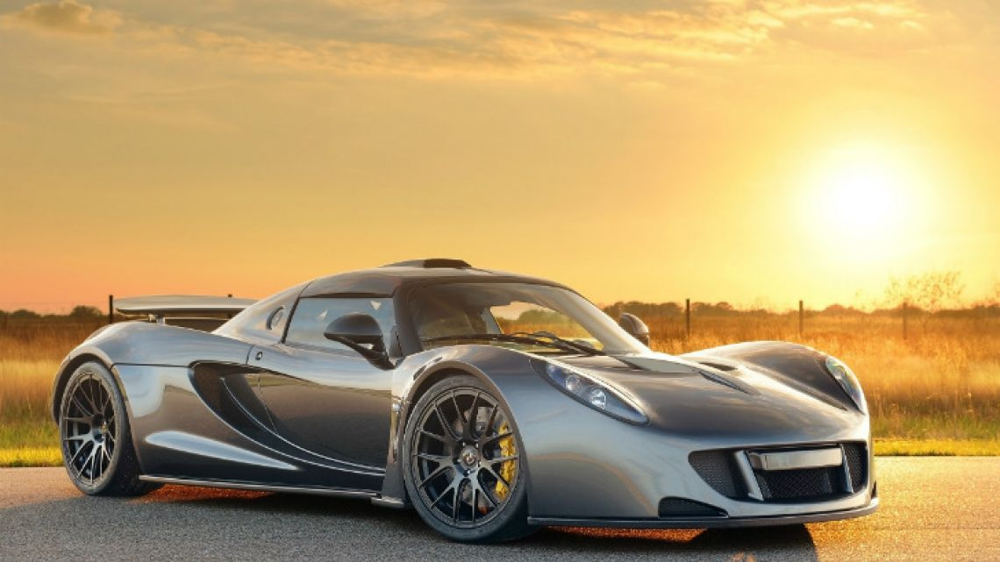
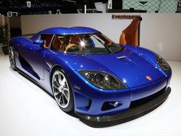
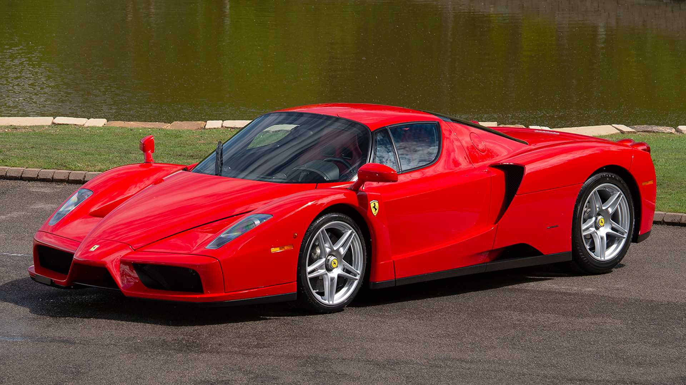
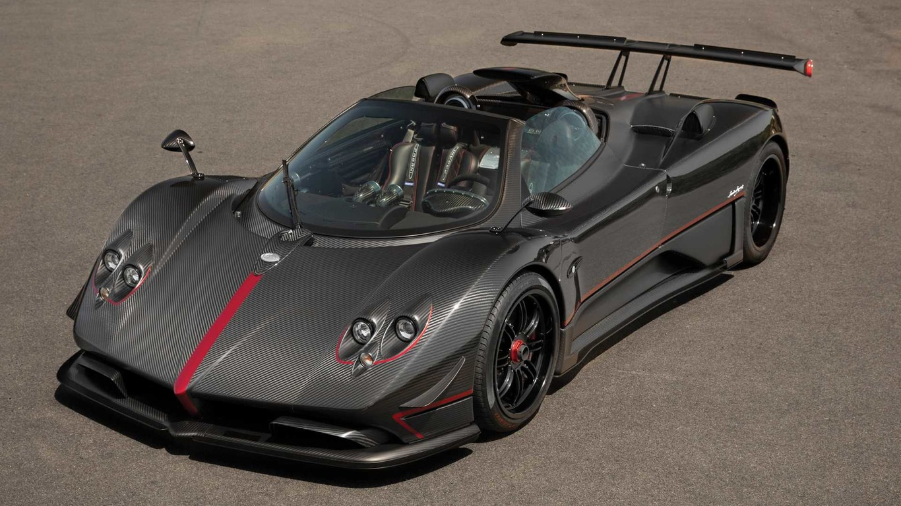
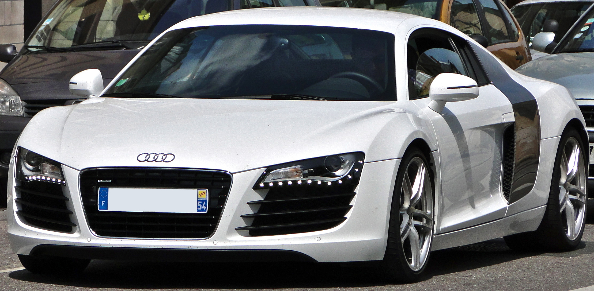
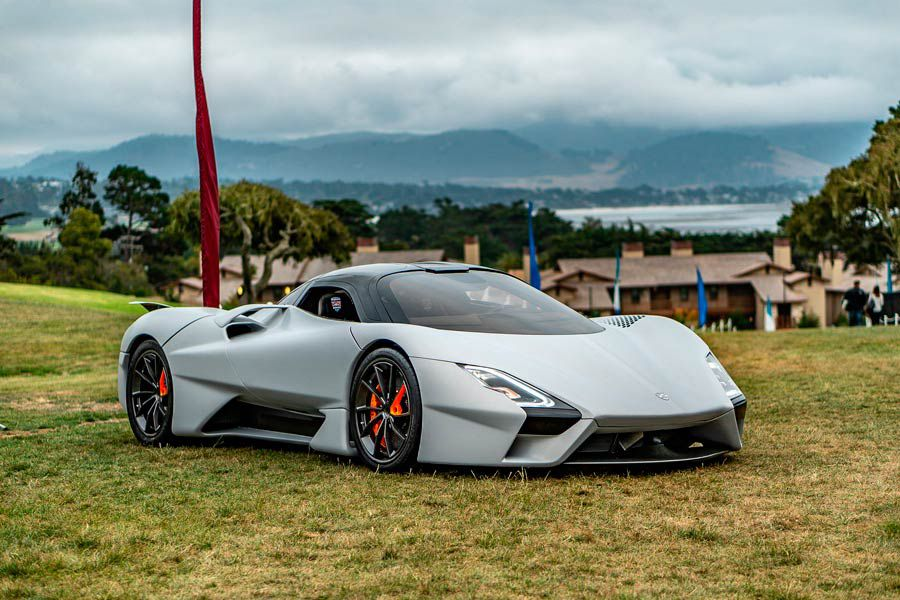

El Nissan GTR, mejor conócido como Godzilla, encabeza nuestra lista como el mejor auto deportivo: sólo tarda 2.5 segundos pasar de 0 a 100 kilómetros por hora. Su diseño aerodinámico está basado en su predecesor: el N Skyline GT-R, el cual fue descontinuado en 1972 y ahora se vuelve a presentar con un renovado Motor Twin-Turbo V6 3.8 litros de 24 válvulas. Con su alta personalidad deportiva, este auto deportivo está pensado para mejorar el desempeño en tres aspectos clave:
1. Incremento en la carga aerodinámica
2. Menor resistencia al viento
3. Mejor enfriamiento de los sistemas vitales
La arquitectura del Nissan GTR es cuidadosamente ensamblada a mano por su propio artesano Takumi. Sólo hay cinco personas en el mundo capaces de ensamblar a mano su motor.
565 HP | Aceleración 0 a 100 km: 2.5 s
Desde su lanzamiento en 2008, el Bugatti Veyron ha sido galardonado como uno de los autos deportivos de extrema calidad hasta la fecha. Aunque lo coloquemos en el segundo puesto, en realidad es un empate con el Nissan GTR, pues ambos solo tardan 2.5 segundos en llegar a los 100km/h.
Al principio se quería que el Bugatti Veyron sobrepasara los mil caballos de fuerza, algo que hasta los expertos de la categoría veían imposible de obtener. Sin embargo con su motor de 8 litros W16 y una caja de cambios doble; el Bugatti logra alcanzar una velocidad máxima de hasta 400 km/h.
1200 HP | Aceleración 0 a 100 km: 2.5 s
Con una velocidad máxima de 434 km/h, este modelo es uno de los líderes del ranking.
Sus prestaciones se alcanzan al combinar un chasis Lotus Elise y un motor V8 con 1.244-hp de 7.0 litros twin-turbocharged. Además, sorprende por su capacidad de lograr el 0 a 100 km/h en menos de tres segundos, el 0 a 160 km/h en 5.6 segundos y el 0 a 322 km/h en 14.51 segundos.
Hennessey registró esta velocidad de 270.4 mph en el Kennedy Space Center, pero solamente en una dirección. Usualmente se hace el recorrido en dos direcciones, se registra el promedio y se tiene en cuenta las condiciones del viento.

4) Koenigsegg CCX
1004 HP | Aceleración 0 a 100 km: 3.2 s
El Koenigsegg CCX rompió el récord por alcanzar los 395 km/h como velocidad máxima en el año 2005. Actualmente ya alcanza una velocidad de 402 km/h gracias a su alta tecnología e imprescindibles avances.
Este auto deportivo alta gama, cuenta con llantas hechas de fibra de carbono, lo que significa un ahorro en peso de 5 kilos por llanta. Por lo que el Koenigsegg se convierte en el auto deportivo con menor peso.

5) Ferrari Enzo
660 HP | Aceleración 0 a 100 km: 3.3 s
Ferrari Enzo cuenta con un motor V-12 central trasero de 5998 cc de cilindrada con el que logra una velocidad máxima de 350 km/h.
Gracias a los materiales con los que está fabricado, fibra de carbono y aluminio, tan sólo pesa 1255 kilos. Con esto logra una aceleración de 0 a 100 km en únicamente 3.3 segundos.

6) Pagani Zonda
555 HP | Aceleración 0 a 100 km: 3.4 s
El auto deportivo Pagani Zonda se produjo desde 1999 hasta 2011 con un motor V12 Mercedes-Benz de 6 litros que le permite alcanzar una velocidad máxima de 320 km/h. La caja de cambios es manual de 6 velocidades.

7) Audi R8
610 HP | Aceleración 0 a 100 km: 3.5 s
El Audi R8 cuenta con un motor V10 de 5.2 litros con el que alcanza una velocidad máxima de 330 km/h. Por primera vez en la historia, Audi colocó el motor en la parte trasera lo que beneficia al Audi R8 en la repartición de peso.
La producción de uno de los autos deportivos más potente empezó en el 2006 y desde entonces se arma a mano por 120 trabajadores.
Una de su principal característica es que cuenta con faros LED al frente que lanzan una luz láser que permite doblar el alcance de la luz normal.

8) Shelby SuperCars Tuatara
Este modelo es el sucesor del Ultimate Aero, un modelo que apunta a soprepasar los 300 mph, o lo que es lo mismo, 482.8 km/h. Para lograrlo, el nuevo supercar utiliza un V8 sobrealimentado de 5.9 litros de diseño propio. El motor produce unos 1,750 caballos de fuerza usando etanol E85, o 1,350 caballos con nafta.
Esa potencia se envía a las ruedas traseras a través de una transmisión automática de siete velocidades.
El Tuatara pesa casi 1,250 kg, y en la marca aseguran que es más aerodinámico que rivales tales como el Hennessey Venom F5, el Bugatti Chiron y el Koenigsegg Agera, con un coeficiente de resistencia 0.27.

9) Ford Mustang GT
435 HP | Aceleración 0 a 100 km: 4 s
De los autos deportivos más reconocidos de nuestro listado el Ford Mustang GT ocupa el puesto número 9.
Tarda 4 segundos de tardanza en llegar de 0 a 100 km.
Este auto deportivo cuenta con dos complementos para monitorear el manejo en la pista: control de arranque y el line lock; el cual bloquea los frenos para dejar que los neumáticos giren y se calienten hasta obtener la temperatura ideal.

10) Hennessey Venom F5
Este modelo se consagró como el más veloz del mundo, alcanzando los 484.4 km/h y superando al Venom GT de Hennessey, que registró su máxima marca de 270 mph (ahora 301 mph) en 2014.
Por primera vez en su historia, Hennessey Performance ha creado un motor partiendo de cero, con un bloque que es mecanizado a partir de un gran pedazo de aluminio forjado.